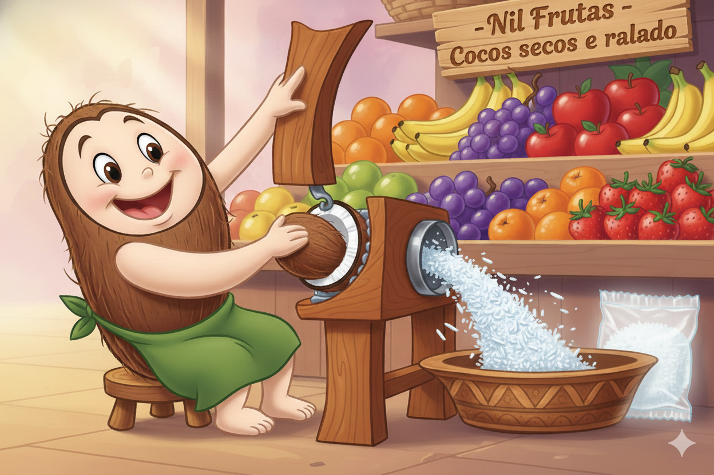

A Loja das Frutas oferece frutas frescas, selecionadas diariamente, garantindo qualidade e preços acessíveis para nossos clientes.
Trabalhamos com frutas tropicais, cítricas e importadas, sempre priorizando o frescor e a procedência dos produtos.